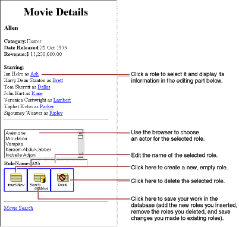
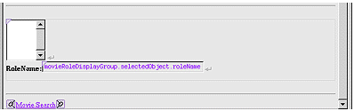
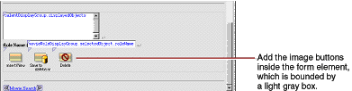

| PATH |

In this section, you'll add the ability to insert, update, and delete movie roles. The MovieDetails page will then look something like this:

Many of the features in this page are similar to features in the Main page, but in this section you perform by hand the tasks the wizard performed for you to create Main. Already you've learned how to create a WODisplayGroup variable and how to bind it to dynamic elements. In this section you'll
Remember how clicking a movie title in the Main page selects
the corresponding Movie object in movieDisplayGroup.
MovieDetails has a similar behavior for selecting a MovieRole object
in movieRoleDisplayGroup.
First you need to add a hyperlink element around the repetition's
role name string so that users can select a particular MovieRole.
When a user clicks one of the movie role hyperlinks, the application
should select the corresponding MovieRole object in the movieRoleDisplayGroup.
Now you need to create an action method to invoke when the hyperlink is clicked.
selectObject,
returning null.selectObject method
to the hyperlink's action attribute.selectObject in MovieDetails.java.
Modify the selectObject action
to look like the following: public WOComponent selectObject() {
movieRoleDisplayGroup.selectObject(movieRole);
return null;
}Now lay out the user interface used to view and edit the selected MovieRole. When you're done, it should look like the following:

![[image: ../Art/woform.gif]](../Art/woform.gif) button
to add a WOForm element between the two horizontal rules.
button
to add a WOForm element between the two horizontal rules.value attribute
to movieRoleDisplayGroup.selectedObject.roleName.The browser you just created is going to display a list of
Talent objects. Like a repetition element, a browser has list and item attributes.
As the browser moves through its list, the
browser sets item to
the object at the current index. The Movies application uses a display
group to provide the browser with a list of Talent objects, so now
you need to create the new display group and a variable to bind
to the browser's item attribute.
talentDisplayGroup,
whose type is WODisplayGrouptalent, whose type
is Talent You don't need to add set and get methods for the variables.
talentDisplayGroup object's entity to
Talent.Remember that to open the Display Group Options panel,
simply
double-click the talentDisplayGroup variable
in the object browser. The
icon initially
displayed next to the variable indicates that initialization parameters
have not yet been set.
talentDisplayGroup to
sort its objects alphabetically (ascending) by lastName.After you
configure talentDisplayGroup,
the object browser shows a
icon
next to the variable.
The Movies application uses a display group to provide Talent objects, but you could fetch the Talent objects from the database without one. Display groups provide a simple way to fetch, insert, update, and delete enterprise objects without writing much, if any, code. To get finer-grained control over these operations, you can work directly with an EOEditingContext object. An editing context can do everything a display group does and much more, but you have to write more code to use one. For more information, see the EOEditingContext class specification in the Enterprise Objects Framework Reference.
Create your browser's bindings. The steps are similar to those for creating bindings for a repetition.
talentDisplayGroup.displayedObjects to
the browser's list attribute.talent to
the browser's item attribute.talent.lastName to
the browser's value attribute.The value attribute
tells the browser what string to display. For each item in
its list, the browser
evaluates the item's value.
The
browser in the MovieDetails page should display the actors' full
names, but there isn't an attribute for full name. In the next
section, you'll create a custom Talent class that implements a fullName method,
but for now just use talent.lastName as
the value attribute.
A
browser also has a selections attribute
that should be bound to an array of objects. A browser's selection
can be zero, one, or many objects; but in the Talent browser, the selection
should refer to a single object. Consequently, you need to add two
methods to manage the browser's selection: one to return an array
containing the selected Talent and one to set the selected Talent
from an array object.
talentSelection to
the MovieDetails.java class
as follows: public NSArray talentSelection() {
EOEnterpriseObject aTalent;
EOEnterpriseObject aMovieRole =
(EOEnterpriseObject)movieRoleDisplayGroup.selectedObject();
if (aMovieRole == null){
return null;
}
aTalent = (EOEnterpriseObject)aMovieRole.valueForKey("talent");
if (aTalent == null){
return null;
} else {
return new NSArray(aTalent);
}
}Because
the browser expects an array for its selections attribute,
this method packages the selected MovieRole's talent object
in an array. If the selected MovieRole object is null, talentSelection simply
returns null to indicate
that the browser shouldn't set a selection.
setTalentSelection as
follows: public void setTalentSelection(NSArray talentArray){
if (talentArray.count() > 0){
EOEnterpriseObject aMovieRole =
(EOEnterpriseObject)movieRoleDisplayGroup.selectedObject();
EOEnterpriseObject selectedTalent =
(EOEnterpriseObject)talentArray.objectAtIndex(0);
aMovieRole.addObjectToBothSidesOfRelationshipWithKey(
selectedTalent, "talent");
}
}Again
because the browser uses an array for its selections attribute,
the setTalentSelection method
must take an array as its argument. If the size of talentArray is
nonzero, then this method sets the selected MovieRole's talent to
the first object in the array. Note that by default, a user can't
select more than one actor in a browser.
With the addition
of these methods, WebObjects Builder now displays talentSelection in
MovieDetail's object browser.
MovieDetails.java.talentSelection to
the browser's selections attribute.Now add the buttons that let users insert, save, and delete MovieRoles. When you're done, it should look like the following:

filename attribute
to the text (including the quotes) "DBWizardInsert.gif".filename attribute
to the text (including the quotes) "DBWizardUpdate.gif".filename attribute
to the text (including the quotes) "DBWizardDelete.gif".The
WODisplayGroup class defines the actions insert and delete.
You'll bind to the Insert/New and Delete buttons. It doesn't,
however, provide a save method. You'll have to provide that yourself.
saveChanges method
from the Main.java class
and paste it into the MovieDetails.java class:
public void saveChanges() throws Exception {
try {
this.session().defaultEditingContext().saveChanges();
}
catch (Exception exception) {
NSLog.err.appendln("Cannot save changes ");
throw exception;
}
}MovieDetails.java.movieRoleDisplayGroup.insert to
the Insert/New image's action attribute.saveChanges method
to the "Save to database" image's action attribute.movieRoleDisplayGroup.delete to
the Delete image's action attribute.MovieDetails.wo.
© 2001 Apple Computer, Inc.